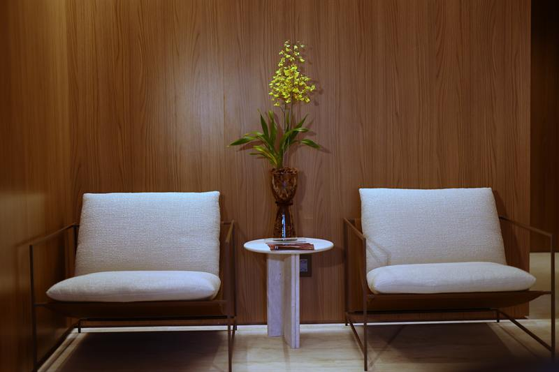

Specialty
Dermatology
Clinical and regenerative dermatology for all genders and ages, with consultations and procedures performed at the clinic itself.
Dermatology at Paoliello Clinic looks after the skin as a whole: diagnosis, clinical treatment and procedures. The regenerative approach starts from an individual assessment and combines laser and microneedling radiofrequency technologies with protocols defined case by case, without excess and without promises.
Unlike surgery, which takes place in hospital, dermatology consultations and procedures are performed in the clinic's own treatment room, by appointment and without a crowded waiting room. Patients of the plastic surgery or nutrition teams find here a natural continuation of their care.
- Consultation
- At the clinic
- Procedures
- The clinic's treatment room
- Technologies
- Laser and microneedling radiofrequency
- Team
- Dr. Stephanie Benikes, dermatologist

Areas of care
What this specialty covers.
Open each area to see what it includes and who sees you.
01Skin
Dr. Stephanie Benikes
Skin
Dr. Stephanie BenikesQuality, texture and ageing of the skin of the face and body, with clinical treatment and procedures.
02Laxity
Dr. Stephanie Benikes
Laxity
Dr. Stephanie BenikesFacial and body laxity, with treatments defined after assessment and maintenance protocols.
03Hair loss
Dr. Stephanie Benikes
Hair loss
Dr. Stephanie BenikesInvestigation of the causes of hair loss and clinical and procedural treatment.
Treatments and procedures
All performed at the clinic, after consultation and skin assessment. The number of sessions and the interval between them are defined individually.
Procedures
Laser treatments
Dr. Stephanie Benikes
Laser treatments
Dr. Stephanie BenikesLaser platforms for texture, pigmentation, scars and laxity, with parameters defined after skin assessment.
Microneedling radiofrequency
Dr. Stephanie Benikes
Microneedling radiofrequency
Dr. Stephanie BenikesDeep collagen stimulation, indicated for facial and body laxity and for skin quality.
Regenerative protocols
Dr. Stephanie Benikes
Regenerative protocols
Dr. Stephanie BenikesApproaches that stimulate skin recovery and quality, combined according to the case and followed over time.
Hair loss treatment
Dr. Stephanie Benikes
Hair loss treatment
Dr. Stephanie BenikesInvestigation of the cause and a clinical and procedural protocol, with periodic follow-up.
Where it happens
At the clinic
Consultations and procedures
- Dermatology consultation and diagnosis
- Laser and radiofrequency procedures in the clinic's treatment room
- Follow-up and maintenance protocols

Who sees you


Consultations by appointment. Patients from other specialties of the clinic are referred internally, without starting over.

How to start
The first step is a consultation.
Tell us the specialty you are interested in and we will find a time. Patients from other cities and countries can start with an online assessment.